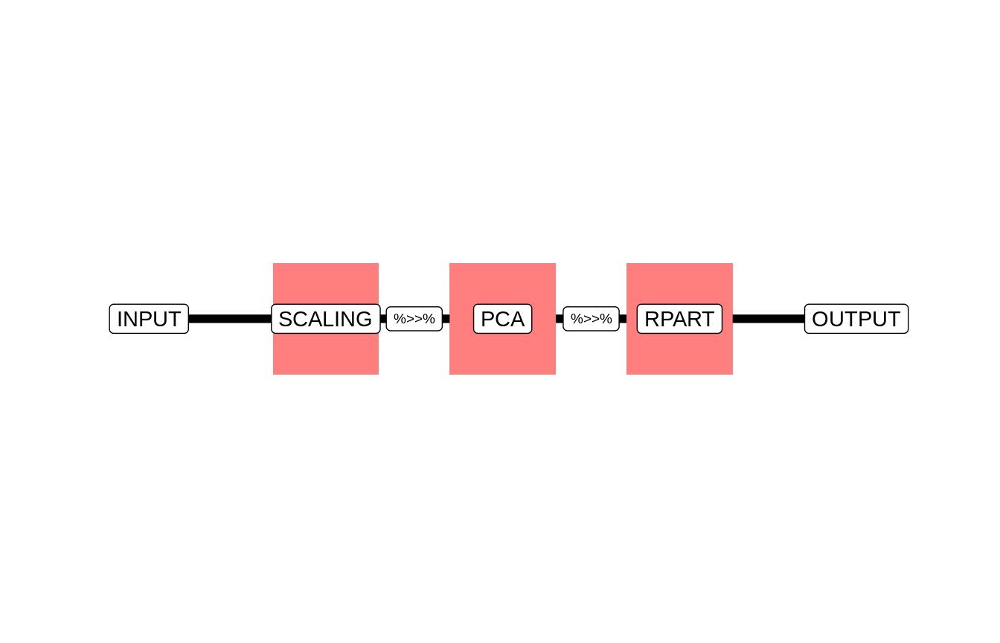

vignettes/a_simple_pipeline.Rmd
This vignette showcases the general syntax and semantic behind mlr3pipelines.
In this example, we create a ĺinear Pipeline. After scaling all input features, we rotate our data using principal component analysis. After this transformation, we use a simple Decision Tree learner for classification.
As exemplary data, we will use the “iris” classification task. This object contains the famous iris dataset and some meta-information, such as the target variable.
We quickly split our data into a train and a test set:
test.idx = sample(seq_len(task$nrow), 30)
train.idx = setdiff(seq_len(task$nrow), test.idx)
# Set task to only use train indexes
task$row_roles$use = train.idxA Pipeline (or Graph) contains multiple pipeline operators (“PipeOp”s), where each PipeOp transforms the data when it flows through it. For this usecase, we require 3 transformations:
PipeOp that scales the dataPipeOp that performs PCAPipeOp that contains the Decision Tree learnerA list of available PipeOps can be obtained from
library(mlr3pipelines)
mlr_pipeops$keys()
#> [1] "backuplearner" "balancesample" "branch"
#> [4] "chunk" "copy" "encode"
#> [7] "featureunion" "filter" "impute"
#> [10] "learner" "learner_cv" "majorityvote"
#> [13] "modelavg" "nloptmajorityvote" "nloptmodelavg"
#> [16] "null" "pca" "scale"
#> [19] "subsample" "unbranch"First we define the required PipeOps:
op1 = PipeOpScale$new()
op2 = PipeOpPCA$new()
op3 = PipeOpLearner$new(learner = mlr_learners$get("classif.rpart"))We can quickly visualize what we want to achieve:
#> Registered S3 methods overwritten by 'ggplot2':
#> method from
#> [.quosures rlang
#> c.quosures rlang
#> print.quosures rlang
In order to get a better understanding of what the respective PipeOps do, we quickly look at one of them in detail:
The most important slots in a PipeOp are:
$train(): A function used to train the PipeOp.$predict(): A function used to predict with the PipeOp.The $train() and $predict() functions define the core functionality of our PipeOp. In many cases, in order to not leak information from the training set into the test set it is imperative to treat train and test data separately. For this we require a $train() function that learns the appropriate transformations from the training set and a $test() function that applies the transformation on future data.
In the case of PipeOpPCA this means the following:
$train() learns a rotation matrix from its input and saves this matrix to an additional slot, $state. It returns the rotated input data stored in a new Task.$predict() uses the rotation matrix stored in $state in order to rotate future, unseen data. It returns those in a new Task.We can now connect the PipeOps constructed earlier to a Pipeline. We can do this using the %>>% operator.
The result of this operation is a “Graph”. A Graph connects the input and output of each PipeOp to the following PipeOp. This allows us to specify linear processing pipelines. In this case, we connect the output of the scaling PipeOp to the input of the PCA PipeOp and the output of the PCA PipeOp to the input of PipeOpLearner.
We can now train the Graph using the iris Task.
When we now train the graph, the data flows through the graph as follows:
PipeOpScale. The PipeOp scales each column in the data contained in the Task and returns a new Task that contains the scaled data to its output.PipeOpPCA. PCA transforms the data and returns a (possibly smaller) Task, that contains the transformed data.In order to predict on new data, we need to save the relevant transformations our data went through while training. As a result, each PipeOp saves a state, where information requried to appropriately transform future data is stored. In our case, this is mean and standard deviation of each column for PipeOpScale, the PCA rotation matrix for PipeOpPCA and the learned model for PipeOpLearner.
# predict on test.idx
task$row_roles$use = test.idx
linear_pipeline$predict(task)
#> $classif.rpart.output
#> <PredictionClassif> for 30 observations:
#> row_id truth response
#> 1: 1 setosa setosa
#> 2: 6 setosa setosa
#> 3: 12 setosa setosa
#> ---
#> 28: 129 virginica virginica
#> 29: 143 virginica virginica
#> 30: 147 virginica virginicaIn most cases, we want to use the pipeline just like an mlr3 learner. In order to achieve this, we simply construct a GraphLearner that contains the pipeline we defined.
We can now use this learner in order to create an [mlr3::Experiment].
For training:
e$train(train.idx)
#> INFO [mlr3] Training learner 'scale.pca.classif.rpart' on task 'iris' ...
#> <Experiment> [trained]:
#> + Task: iris
#> + Learner: scale.pca.classif.rpart
#> + Model: [Graph]
#> - Predictions: [missing]
#> - Performance: [missing]
#>
#> Public: clone(), ctrl, data, has_errors, hash, learner, log(),
#> model, performance, predict(), prediction, score(), seeds,
#> state, task, test_set, timings, train_set, train(),
#> validation_set
e$model
#> Graph with 3 PipeOps:
#> ID State sccssors prdcssors
#> scale <list> pca
#> pca <prcomp> classif.rpart scale
#> classif.rpart <LearnerClassifRpart> pcatesting:
e$predict(test.idx)
#> INFO [mlr3] Predicting with model of learner 'scale.pca.classif.rpart' on task 'iris' ...
#> <Experiment> [predicted]:
#> + Task: iris
#> + Learner: scale.pca.classif.rpart
#> + Model: [Graph]
#> + Predictions: [PredictionClassif]
#> - Performance: [missing]
#>
#> Public: clone(), ctrl, data, has_errors, hash, learner, log(),
#> model, performance, predict(), prediction, score(), seeds,
#> state, task, test_set, timings, train_set, train(),
#> validation_set
e$prediction
#> <PredictionClassif> for 30 observations:
#> row_id truth response
#> 1: 1 setosa setosa
#> 2: 6 setosa setosa
#> 3: 12 setosa setosa
#> ---
#> 28: 129 virginica virginica
#> 29: 143 virginica virginica
#> 30: 147 virginica virginicaand scoring:
e$score()
#> INFO [mlr3] Scoring predictions of learner 'scale.pca.classif.rpart' on task 'iris' ...
#> <Experiment> [scored]:
#> + Task: iris
#> + Learner: scale.pca.classif.rpart
#> + Model: [Graph]
#> + Predictions: [PredictionClassif]
#> + Performance: classif.ce=0.1333333
#>
#> Public: clone(), ctrl, data, has_errors, hash, learner, log(),
#> model, performance, predict(), prediction, score(), seeds,
#> state, task, test_set, timings, train_set, train(),
#> validation_set
e$performance["classif.ce"]
#> classif.ce
#> 0.1333333This allows us to seamlessly integrate pipelines with the whole mlr3 ecosystem, and thus for example resample or benchmark pipelines, tune its params, and many more things.
For additional information on mlr3 please refer to the respective vignettes.